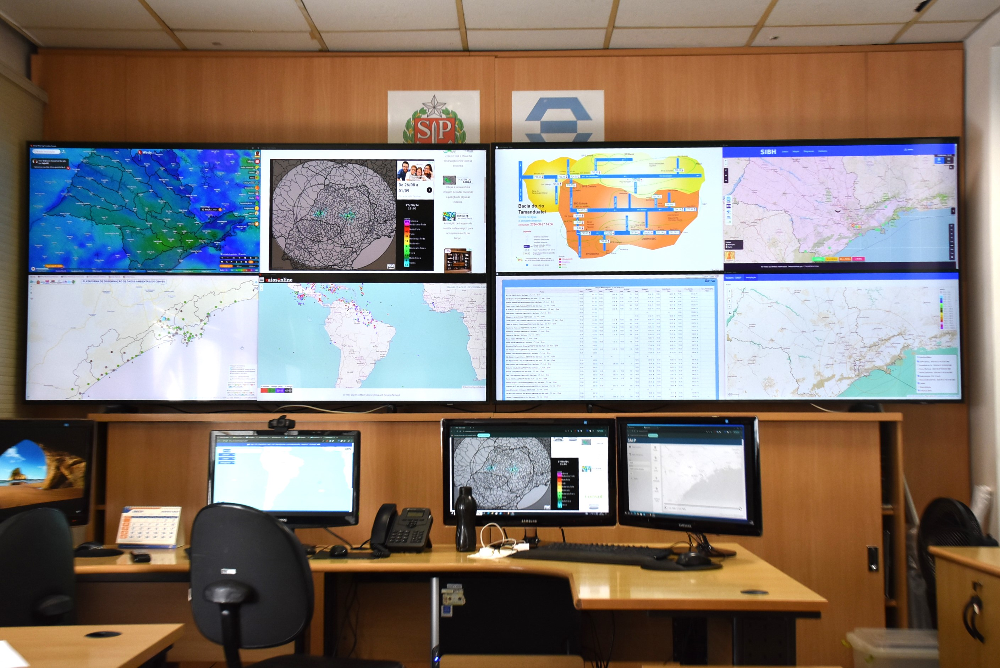

SALA DE SITUAÇÃO DO ESTADO DE SÃO PAULO
A SS-SP Sala de Situação do Estado de São Paulo é responsável pelo monitoamento dos Recursos Hídricos do Estado de São Paulo.
Objetivo
Operando como uma central de monitoramento em tempo real, a sala de situação tem objetivo de acompanhar condições hidrometeorologicas e ocorrências de eventos críticos, além, de subsidiar a gestão de recursos hídricos em todo o Estado.
-
Monitorar e informar a ocorrência de eventos hidrológicos críticos;
-
Acompanhar a operação e propor adequações na rede hidrometeorológica específica para monitoramento de eventos hidrológicos críticos;
-
Elaborar relatórios descrevendo a situação das bacias hidrográficas, das estações de monitoramento e dos reservatórios, bem como o levantamento das informações sobre os eventos hidrológicos críticos.
Os objetivos principais da Sala de Situação são:
Produtos
HidroApp
Monitoramento
Monitoramento em tempo real através de satélites, radares, pluviometria para análise de chuva e fluviometria para niveis de rios, córregos e outros cursos d'agua.
Chuva AgoraSatélites
Para acompanhamento das chuvas e previsões para tomadas de decisões.
Radares
Radares SP-Águas, IpMet, RedeMet e entre outros, ultilizados para monitorar, registrar e documentar o estado de cada evento.
Pluviometria
Registro de chuvas
Fluviometria
Registro de níveis de rios, córregos, piscinões e outros cursos d'agua.